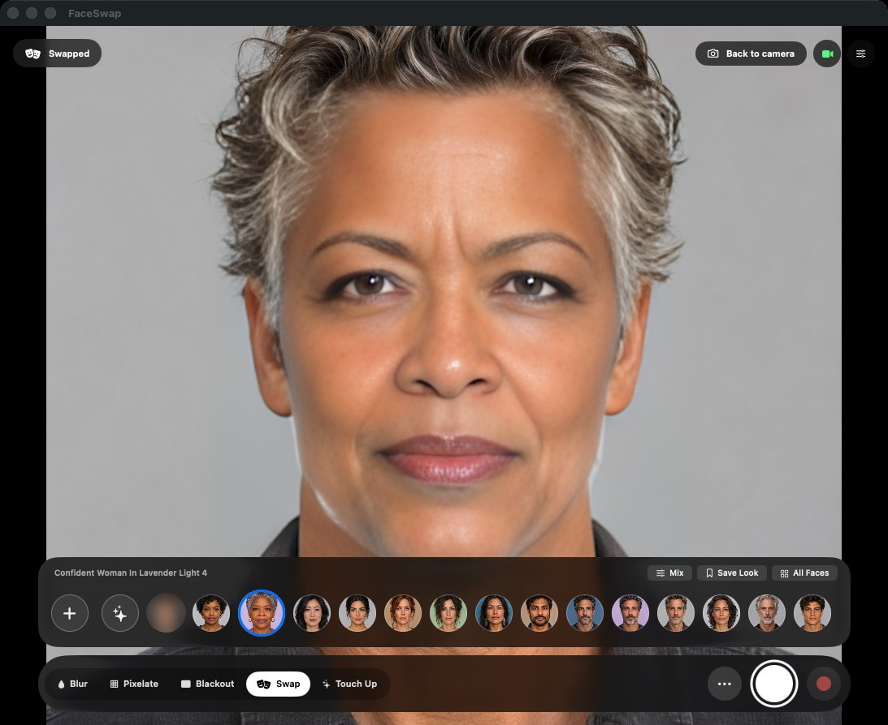
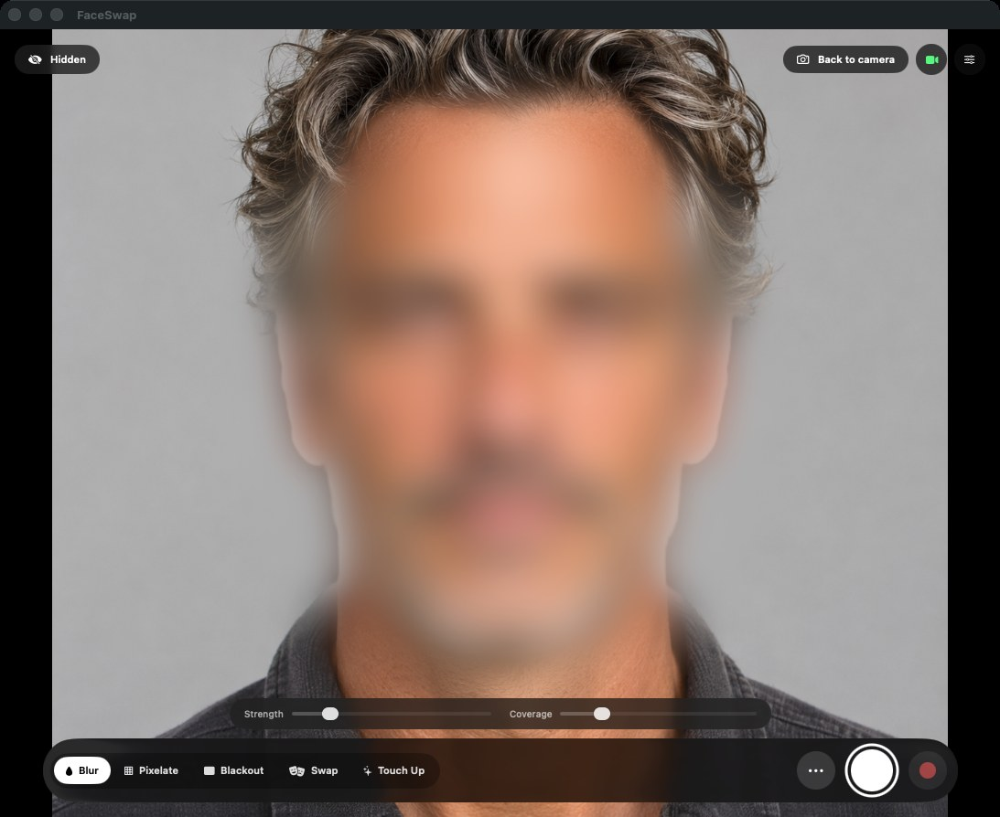
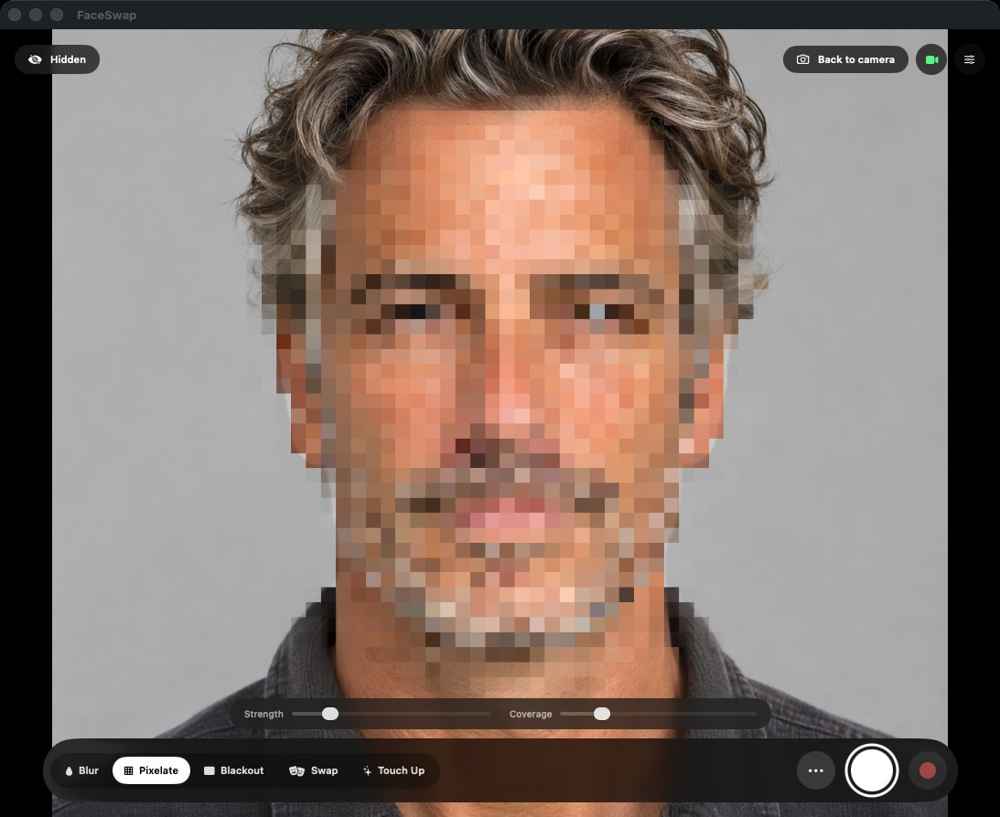
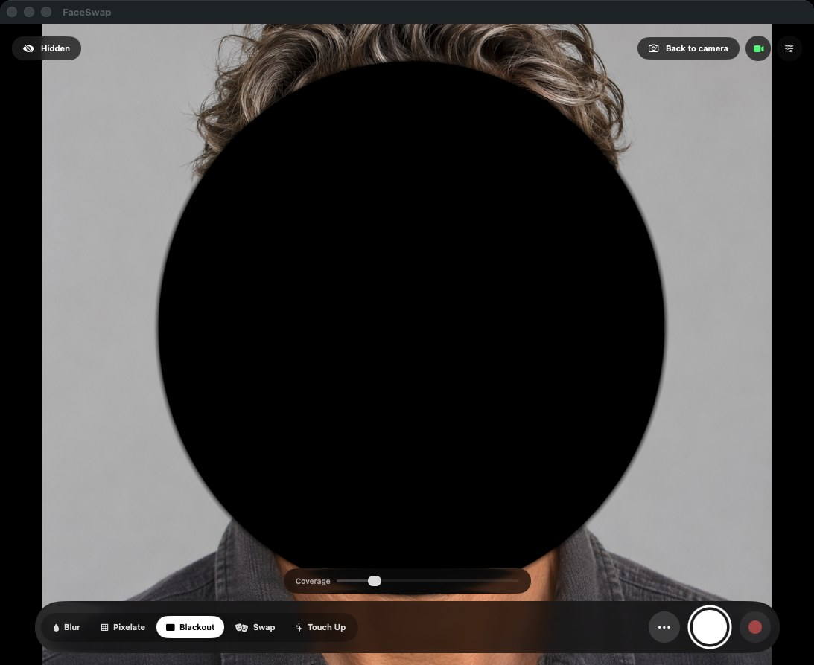
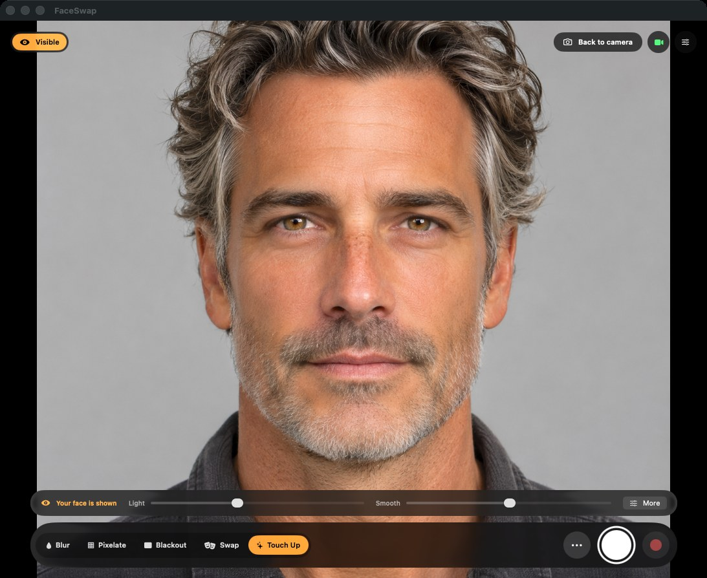
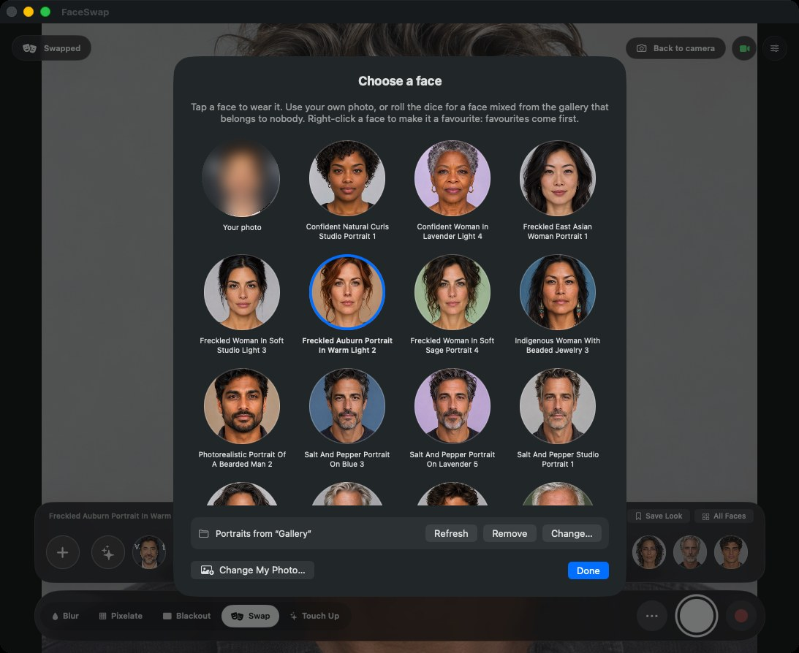
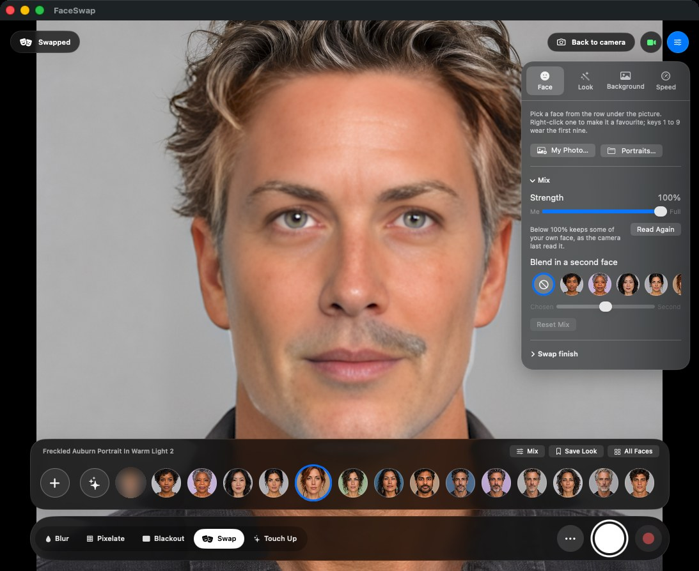
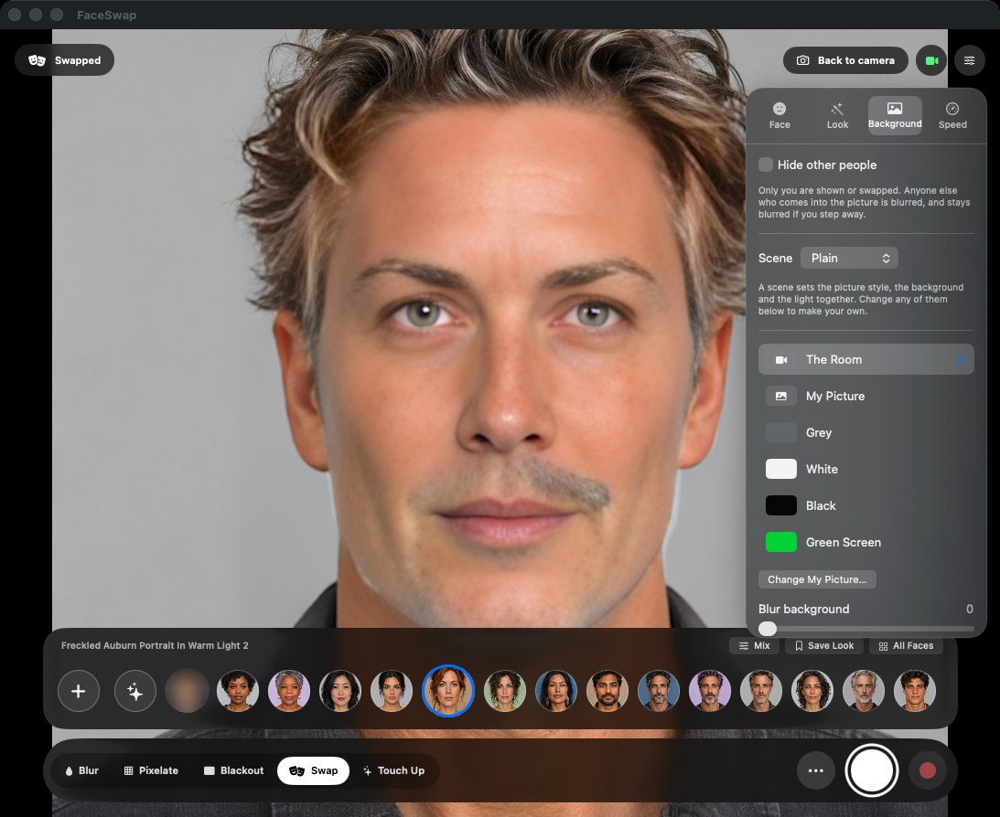
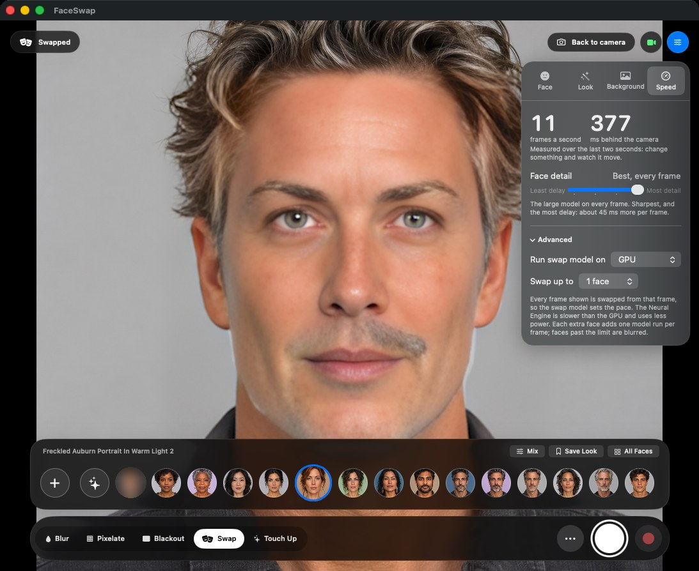

Using FaceSwap
Everything from the first install to the finer settings. If you only read one section, read FaceSwap Camera: that’s how your video apps see the result.
Install
FaceSwap needs macOS 14 Sonoma or later on a Mac with Apple silicon. It’s signed with Developer ID and notarized by Apple, so it opens like any other downloaded app.
- Open the latest release on GitHub and download one of the following:
- FaceSwap-1.0.dmg: open it and drag FaceSwap to Applications.
- FaceSwap-1.0.zip: unzip it and move FaceSwap to Applications.
- FaceSwap-1.0.pkg: an installer that puts FaceSwap in Applications for you.
- Make sure the app is in
/Applications. macOS only installs camera extensions from there. - Open FaceSwap and allow camera access when macOS asks.
- Click Install FaceSwap Camera to add the virtual camera. See FaceSwap Camera.
Blur, Pixelate and Blackout work immediately. Swap and the face touch-ups need the models, which aren’t publicly available.
Updates. FaceSwap tells you when a newer release is out: an Update button appears over the picture. To check yourself, choose FaceSwap › Check for Updates…. It opens the release page and never downloads or installs anything on its own. After an update, a short note lists what changed.
Models
Swapping and touch-ups run on Core ML models that aren’t inside the app. Their upstream licences allow only non-commercial research and personal use (see Privacy and licences), so they aren’t part of the public download and can’t be shared openly. Without them, Blur, Pixelate, Blackout, lighting, backgrounds and every call tool still work, and Swap falls back to Blur.
If you’ve been given access to the model files, the app adds them like this:
| Feature | Enables | Download |
|---|---|---|
| Face swap | The Swap style, the gallery, Mix and looks | about 380 MB |
| Face and hair touch-ups | Hair and lip colour, teeth, eyes, skin (Swap and Touch Up) | about 45 MB |
| Enhanced face detail | Face detail: Enhanced | about 40 MB |
| Best face detail | Face detail: Best and Best every frame | about 175 MB |
- On first launch, the Set up FaceSwap window lists the features with their sizes and terms. You can open it again later from Settings › Models or ••• › Install Models….
- Click Download beside each feature you want. Your browser fetches that feature’s files. This needs a GitHub account that has been given access; otherwise the page shows “Page not found”.
- FaceSwap notices the files when they reach your Downloads folder. It checks each one against its expected size and hash, compiles it for your Mac, and turns the feature on without a restart.
If the files are somewhere else, for example on a drive or fetched by hand from the release page, click Files Are Somewhere Else… and choose their folder. Picking Swap, or opening a panel whose models are missing, offers the same list. A model shared by two features is downloaded only once.
FaceSwap Camera
FaceSwap Camera is a virtual camera that shows other apps exactly what the FaceSwap window shows: faces hidden or swapped, background, cards and reactions.
- In FaceSwap, click Install FaceSwap Camera.
- macOS asks for approval. Open System Settings › General › Login Items & Extensions, then under Extensions › By Category › Camera Extensions turn on FaceSwap.
- In Zoom, Meet, FaceTime, Teams, Slack or your browser, choose FaceSwap Camera as the camera.
- Keep FaceSwap running. When it isn’t, FaceSwap Camera shows a placeholder card instead of your picture.
The green camera button at the top right of the window shows the camera’s status. Click it for setup help, the output resolution and mirroring. When something needs doing, such as Approve in System Settings or Restart your Mac to finish, the button turns into words that say so.
Mirroring. Your preview is mirrored, like a mirror. FaceSwap Camera sends the true picture, so text behind you reads correctly to everyone else. You can change this under the camera button or in Settings › Camera.
The window
The picture fills the window and the controls float over it. They fade when the pointer leaves the window and come back when you move or click. To keep them on screen, turn off Settings › General › Hide the controls when the pointer is away.

- Status bar (top left): what’s happening to faces. It reads Hidden, Swapped, or Visible in orange when your real face is going out. It also shows the live frame rate and delay, and Compare, which you hold to see the real camera. Compare only changes your preview, never FaceSwap Camera or clips.
- Top right: the FaceSwap Camera status and the Adjust button (⌘I).
- Strip: whatever the current style needs. In Swap, it’s the shelf of faces; in other styles, the sliders.
- Dock: the five styles on the left. On the right, the ••• menu, the shutter and the record button.
Styles




Blur, Pixelate and Blackout
These cover every face in the picture. Strength sets how heavy the effect is, and Coverage sets how far it reaches past the face. They use Apple’s built-in face detection and need no downloads. When a face is lost for a moment, it stays covered at its last position for 1.5 seconds.
Swap
Swap replaces your face with the one you choose while keeping your expression, head angle and lighting. It works at any head angle. If a frame can’t be swapped, that face is blurred rather than shown. Until the models are loaded or a face is chosen, Swap falls back to Blur.
Touch Up
Touch Up shows your own face, improved by the settings on the Adjust card’s Look page. Its dock button turns orange because it hides nothing. The strip offers quick Light and Smooth sliders.
Faces and the gallery
In Swap, the shelf above the dock holds every face you can wear. The face you’re wearing is larger, and its name is shown above the row.
- + uploads a face from your photo library or a file. You can also drop a photo onto the row of faces.
- ✦ Presentable Me is your own face, evened out and lit with a gentle polish.
- The dice mixes two or three gallery faces at random into a face that belongs to nobody.
- Press 1–9 to wear the first nine faces. Right-click a face to make it a favourite, and favourites come first.
- All Faces opens the gallery, where every face is shown large and named.

Your own portraits folder
In the gallery, click Change… to choose a folder of portraits. Use one front-facing, well-lit person per file. FaceSwap reads them and tells you how many faces it found, and which files it skipped and why: no face, several faces, a face that’s too small, or a turned head. Click Refresh (⌘R) after you add or remove files. The file name becomes the face’s name, so old-sailor.jpg becomes “Old Sailor”.
Use faces you have the right to use. The bundled gallery contains only generated portraits. When you add your own, don’t impersonate a real person without their consent.
Mix

Click Mix on the shelf. Mix only changes the identity given to the swap model, so it doesn’t slow anything down.
- Strength slides from your own face (0%) to the chosen face (100%). FaceSwap reads your face from one camera frame. Click Read Again if your lighting or glasses change.
- Blend in a second face combines the chosen face with another gallery face, and the slider sets how much of each. Blending between a portrait and its older or younger version makes the face look older or younger.
The Adjust card
Click the Adjust button at the top right or press ⌘I. The card opens over the picture, so you can see each change as you make it.




Face
Your photo, your portraits folder, Mix, and the swap’s finish. The finish settings are folded shut by default:
- Sharpness: brings back detail lost when the face is enlarged to fit the picture.
- Grain: adds camera-like noise so the face blends with the rest of the picture.
- Match skin colour: evens the swapped face’s colour with your camera.
- Show my mouth when open and Show hands in front of my face: let your real mouth and hands show through.
- Tracking smoothing: steadies the face when your head is still.
Look
Light my face, smooth skin, hair colour, lip colour, whiten teeth and brighten eyes. Lighting works in every style. Hair, lips, teeth and eyes need the Face and hair touch-ups models. Turn All Off resets the page.
Background
Keep the room, or replace it with your picture, grey, white, black or a green screen, and blur it as much as you like. Hide other people shows or swaps only you, and blurs anyone else who comes into the picture. This page also has scenes and picture styles (Noir, Vintage, Cool, Vivid, Faded).
Speed
Face detail trades frame rate for sharpness:
| Setting | What it does | Roughly, on an M4 Pro |
|---|---|---|
| Off | The swap as the model makes it | about 18–20 fps |
| Enhanced | Redraws the face at 256 × 256 | about 14.5 fps |
| Best | Redraws at 512 × 512 every other frame, blended so motion stays clean | about 14 fps |
| Best every frame | The sharpest result, using the Neural Engine alongside the GPU | slower on older Macs |
Under Advanced, you can choose where the swap model runs and how many faces it swaps.
Looks and scenes
A look saves the face you’re wearing, including a mix or a random face, along with its strength and your look and background settings. Click Save Look on the shelf, or use Looks › Save Current Look….
- Saved looks appear as chips above the strip. Click one to wear it, or right-click to delete it.
- Share a look: right-click it and choose Share to make a file. The person you send it to can drop it on their window, or add it from ••• › Add a Shared Look….
- Scenes (••• menu or the Background page): Film Noir, Seventies, Ice, Studio and Friday each set the picture style, background and light in one click.
Tools for calls
These are in the ••• menu, and most have a shortcut that works from any app. Everything they add appears in FaceSwap Camera, so everyone on the call sees it.
Quick cards ⌃⌥⌘K
Put a message in your picture. Back in covers the picture and counts down. Lost my audio, Listening, can’t talk, Bad connection and your own words appear as a strip along the bottom.
Follow Me ⌃⌥⌘F
The picture crops and pans gently to keep you in the middle as you lean, stand up or move around.
Presenter Mode ⌃⌥⌘P
Choose Show a Window in My Picture… and pick a window: slides, a document or a browser tab. It becomes your picture, with you in a corner tile or cut out in front of it. This works in any meeting app, even ones without screen sharing.
React to hand signs
- 👍 A thumbs-up sends thumbs floating up the picture.
- ✌️ Two fingers held up drops confetti.
- ✋ An open hand held up shows a raised-hand badge for as long as your hand is up.
Away card
With Away Card When I Step Out on, the picture becomes a blurred card saying you’ll be back whenever you leave the frame. It disappears as soon as you return.
Mark swapped video “Altered”
Adds a small Altered label in a corner whenever a swap is going out, for when you want to use a swap openly.
Borrow a Face From a Call
Pick a meeting window, then one of the faces in it, and wear it for the rest of the session. The borrowed face can’t be saved, it lasts until you pick another face or quit, and the picture is marked Altered the whole time. Only do this with the person’s permission.
Photos and clips
The shutter saves a still photo, and File › Save Photo As… does the same. The red record button (⇧⌘R) records what the window shows, with faces already hidden or swapped, to an MP4 with sound from your microphone. Clips stop by themselves after 30 seconds.
When a clip ends, a window plays it on a loop with Share…, Save As… and Delete. Until you share or save it, it’s only a temporary file.
- Before/after wipe (Settings › Clips, or right-click the record button): the clip opens on the real camera for a second, then a white line sweeps across to reveal the swap. It’s off by default. While it’s off, your unaltered face is never recorded.
- Clips aren’t mirrored, because they’re made for other people to watch.
Blur faces in a photo
Choose ••• › Choose File… or Photos Library…, or drop a photo anywhere on the window. Every style works on the still photo, and the shutter saves the result. Click Back to camera to go back to the live picture.
Menu bar mode
With FaceSwap › Keep Running in Menu Bar on (the default), closing the window leaves FaceSwap running as a menu bar icon with no Dock icon, still feeding FaceSwap Camera. From the menu you can switch styles and looks, black out, pause the camera (which turns its light off), reopen the window or quit.
Keyboard shortcuts
| Shortcut | Action | Works |
|---|---|---|
| ⌃⌥⌘B | Black out every face now; press again to go back | From any app |
| ⌃⌥⌘1–9 | Wear the faces in the row | From any app |
| ⌃⌥⌘0 | Presentable Me | From any app |
| ⌃⌥⌘K | Quick card | From any app |
| ⌃⌥⌘F | Follow Me | From any app |
| ⌃⌥⌘P | Show a window in my picture / stop presenting | From any app |
| 1–9 | Wear the faces in the row (Swap) | In FaceSwap |
| ⌘I | Show or hide the Adjust card | In FaceSwap |
| ⇧⌘R | Record a clip | In FaceSwap |
| ⌘R | Re-read your portraits folder | In the gallery |
| ⌘, | Settings (Camera, Models, Clips, General) | In FaceSwap |
iPhone and iPad
FaceSwap also runs on iPhone and iPad (iOS and iPadOS 17 or later) with the same styles, gallery, looks and clips. iOS doesn’t allow virtual cameras, so FaceSwap Camera is Mac-only. To add models on iPhone, use the download button in the top bar. There is no public iPhone or iPad download yet.
Troubleshooting
FaceSwap Camera doesn’t appear in my meeting app
Check that FaceSwap is in /Applications and that the extension is approved in System Settings › General › Login Items & Extensions. Then quit and reopen the meeting app; most apps only look for cameras when they start. If the camera button says Restart your Mac to finish, the camera extension was updated and macOS needs a restart to load the new version.
The meeting shows a placeholder card instead of me
FaceSwap isn’t running, or the camera is paused from the menu bar. Open FaceSwap, or choose Resume Camera.
Swap shows a blur instead of a face
The Face swap models aren’t installed (they aren’t in the public download) or are still loading, or no face is chosen yet. Open Settings › Models. A face the detector can’t see clearly, for example one that is very small or mostly hidden, is blurred instead.
The frame rate drops in a dim room
Many webcams halve their frame rate in low light to get longer exposures, whatever style you use. More light brings back 30 fps. Face detail settings above Off also cost frames; see Speed.
The swapped face looks soft
The swap model works at 128 × 128 pixels. Turn on Face detail: Enhanced or Best, and raise Sharpness on the Face page.
My uploaded photo was rejected
Use a clear, front-facing photo with one person, where the face fills a good part of the frame. FaceSwap says why it skipped a photo: no face, several faces, a face that’s too small, or a turned head.
Privacy and licences
FaceSwap processes every frame on your Mac. There’s no account, no analytics and no cloud processing. The only network requests are the optional update check, which reads a small version file, and the model downloads you start yourself.
The face models keep their upstream terms, which is why they’re downloaded separately:
- Face swap models (InsightFace): non-commercial use only.
- Face parser (trained on CelebAMask-HQ): research use only.
- GPEN: no licence published upstream; personal testing only.
- GFPGAN: includes third-party parts under their own terms; personal testing only.
Be decent with it. FaceSwap is made for privacy and fun. Don’t use a swap to deceive or impersonate a real person. The Altered label is there for when you want to be open about it.